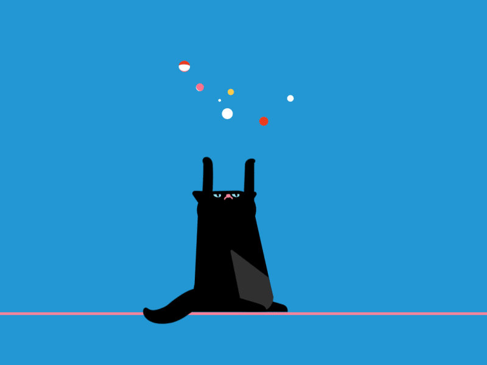
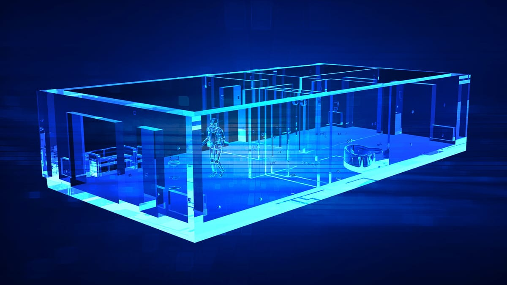

:: Now begins a story...
May I present to you, a finely curated section of a fine collection of the wonderful web we weave with a weekly roundup of bits and pieces from the far corners of the super information highway that I like to call — Token Wisdom ✨


“The wisest mind has something yet to learn."

A curated wisdom of consumed knowledge and token allocation.
↳ April 21st 🧿 April 27th, 2024
📖 Table of Contents

Welcome to Token Wisdom
🎉 The Newest / Latest - The Top 10 Articles I’ve Consumed & Curated
#DigitalAlchemy: Explore how the confluence of art and technology is redefining creative expression.
#StrategicSymphony: Uncover the surprising power moves driving Taylor Swift's music industry domination.
#SiliconSoutheast: Discover how Taiwan is attracting tech talents from across Southeast Asia to fuel its semiconductor industry.
#AIAsCuspOfFashion: Delve into Intel's integration of AI to revolutionize our tech ecosystem, from toasters to wardrobes.
And much more... Ignite Your Curiosity with the Full Newsletter
👁️ A Closer Look
Revolutionary Technology Allows Seeing Through Walls Using Wi-Fi Signals
- Discover how DensePose and Wi-Fi advancements redefine possibilities in wireless sensing and pose estimation.
Voyage into Digital Enlightenment
📺 Time Well Spent - The Top 10 Videos I’ve Consumed & Curated
#AIFieldPlay: Examine the alchemy of AI with traditional football, a dance of data and athleticism.
#WitHopefully,OutputStreamsScam: Peer into the depths where financial fraud weaves its darkened net and hope aims to pierce through.
#GameBoyGenius: Unravel the iconic pathway of a gaming giant's journey from pixels to hearts.
And more... Delve into Stories Worth Your Time
Our current edition intertwines past and present, bridging classic wisdom with the surging tides of modern paradigms. Whether honing in on the capricious fate of animatronics towards sentient storytelling, considering the reflective echoes of virtual spaces, or wrestling with the ethical entanglements of AI divvying tasks better than a seasoned maestro, we lay the intricate webs of technology and its silent dialogue with humanity under the microscope.
Embark on the Journey toward Token Wisdom
🎖️ A highly curated collection of carefully consumed knowledge.
🎉 Newest / Latest
100% Authentic Humanly Chosen

Discover the dynamic interplay between human ingenuity and artificial intelligence, examining how they transform digital art, spacecraft design, military advancements, and the retrieval of human-led tasks from automation—unveiling a realm of newfound potential.
#SilentStrategies: Taylor Swift masterfully navigates music industry currents, leveraging silence into a strategic coup.
#SemiconductorScholarship: Taiwan attracts Southeast Asian talent, bridging the tech talent gap with enticing educational opportunities.
#IntelInnovation: Intel champions AI integration, pledging to infuse smarter, smaller LLMs across the computing spectrum.
#StratosphericStyle: HALO's Aurora capsule, designed by Frank Stephenson, promises opulent space tourism with a high-tech twist.
#MaterialMavericks: Californian startup Thintronics challenges a Japanese giant's hold on crucial semiconductor insulation materials.
#CreativeAI: AI's burgeoning capabilities spark a transformative era in creative work—prompting strategists to cultivate a 'gardener' role.
#MilitaryTechTrend: The US Army fortifies bases with AI, utilizing facial recognition for high-precision threat detection and security.
#BrainwavesUnlocked: Groundbreaking research reveals brain network syncs crucial for maintaining attention, opening doors to cognitive enhancement.
#HumanVsRobot: In a role reversal, humans step up to fill the nuanced gaps left by AI, underscoring the value of human ingenuity.

The Full Breakdown - Top 10 of the Week
100% Human Curated Collection of Content
👁️ A Closer Look
Attempts to explore a subject and share my thoughts.

 ✨ Token Wisdom
✨ Token Wisdom

A Closer Look: Explorations in Technology
Weekly essay in the areas of blockchain, artificial intelligence, extended reality, quantum computing, and all the bits and pieces.


📺 Time Well Spent
Top Ten of the Time I Spend

This is a kaleidoscope of innovation, where the legacy of green-hued gaming nostalgia meets the modern sagas of AI sports strategies, digital titans under fire, and the intrepid journeys within virtual worlds and beyond.
AI Betrayal, Visual Spectacles, Sonic Roots, Chip Wars: Uncover the Hidden Impacts of Progress!
Dive into the dynamic tapestry of human endeavor, where the lenses of technology, art, and critique converge to weave tales of innovation, nostalgia, disruption, and the unending quest for wisdom in a world enthralled by progress.
#LensWars: An exploration of anamorphic versus spherical lenses reveals the trade-offs between cinematic creativity and practical affordability.
#UnderratedCinema: "Speed Racer" receives a second glance as an underappreciated masterpiece that marries vivid style with heartfelt storytelling.
#VFXMagicLost: Disney's abandoned sodium vapor process represents a forgotten revolution in visual effects with unmatched precision.
#AIPromises: Jon Stewart critiques AI technologies with skepticism, pointing to potential labor displacement over promised global betterment.
#BluesLegacy: The blues is celebrated as the cornerstone genre that seeded the evolution of modern music across genres and generations.
#ArtInMotion: An exhibition merges dance and digital art, charting a transformative journey fueled by Google's MediaPipe technology.
#SemiconductorSovereignty: The U.S.'s semiconductor tale turns on strategic misfires and missed opportunities, leaving room for global contenders to lead.
#ProcessedPeril: Food conglomerates draw from Big Tobacco’s playbook, stealthily addicting consumers to unhealthy foods while marketing them as safe.
#XRFrontiers: NVIDIA's VP emplanes a vision where AR meets VR and AI, promising a future where digital and physical realms entwine seamlessly.
If you watch these ten videos, statistics have proven your IQ will go up, like, 2 points or something like that. I saw it on Perplexity.*
For a Full Breakdown of Time Well Spent
A weekly top ten list of YouTube videos that caught my attention.

✨Token Wisdom
Knowledge Transmuted
As we come to the conclusion of this newsletter, it's clear that we've embarked on a fascinating journey through the realms of innovation and exploration. From the tales of Consumer Hardware triumphs and tribulations to the illuminating insights into the power of lenses, music, and visual effects, we've delved into the diverse landscapes of technology, art, and industry.
We've witnessed the ever-evolving dance between humans and AI, unraveling the complexities and implications that arise when merging the computational might of machines and the enduring essence of humanity. Our discussions have touched upon the importance of transparency, accountability, and the need to navigate the pitfalls of masking human labor as artificial intelligence.
However, as the narratives unfolded, it left us pondering — are we assigning undue value to certain human attributes in an attempt to remain the protagonists of our narrative? Could our romanticism of the past becloud our vision for the future?
Yet, amidst these contemplations, one truth remains constant—the wisdom we acquire. Token Wisdom, if you will. As Albert Einstein aptly observed,
"Wisdom is not the product of schooling but the lifelong attempt to acquire it."
It is this pursuit of wisdom that enables us to navigate the ever-changing landscape with poise and adaptability.
In this grand narrative of today's stories, whether it's the symphonic artistry of consumer hardware or the rhythm of the blues, let us embrace the duality of progress. Let us celebrate the strengths of both human ingenuity and artificial advancement, recognizing that true wisdom lies in the harmonious interplay between the two.
So, as we wrap up this edition, I invite you to carry this token of wisdom with you—the understanding that the most profound technology is not the one that supersedes us but rather the one that amplifies what makes us quintessentially human: creativity, adaptability, and emotional intelligence.
As we bid adieu for now, remember that the pursuit of knowledge is infinite, and though we may know much, there is always more to learn. Until our paths cross again, keep your curiosity aflame and your mind open to the possibilities that lie ahead. Stay inspired, stay innovative, and above all, stay wise.
⏰
Embrace the pursuit of knowledge, for it's in learning that we forge the tools to shape a better tomorrow. Sign up for more Token Wisdom and carry the torch of foresight into the fathomless domains of innovation and beyond.
Until next time: stay smart, stay kind, and definitely stay weird!
Become a Token Wisdom subscriber—Illuminate your inbox with the light of knowledge. ✨

Thank you for cruising by the Cult of Innovation
We’re making some Stone Soup here and if you enjoyed this amuse-bouche of news compilations in bite-sized morsels, please share with your friends and help feed a community. Mmmm. #nomnom.